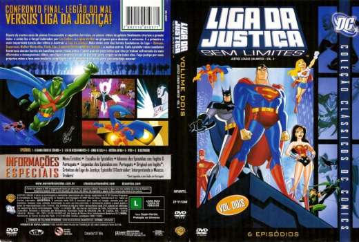

Outro Título:Justice League Unlimited - Vol. 2
País:United States,
Idiomas falados:Inglês, Português
Gênero(s):Animação
Diretor(s):Joaquim Dos Santos, Dan Riba
Escritor(es):Dwayne McDuffie, Stan Berkowitz, Andrew Kreisberg, Henry Gilroy, Warren Ellis
Codec:MPEG-2 (DVD)
Número: 5796


Certificado:L
Sinopse:
Continuação da série animada da Liga da Justiça, mostra os membros originais da equipe unidos em sua luta contra o crime e o mal por dezenas de outros heróis do universo da DC Comics.
Elenco:


Tipo de mídia: DVD5,
Legendas: Português, Sem Legendas
Alugado: Não
Tela: Anamorphic Widescreen